En blogg om god mat
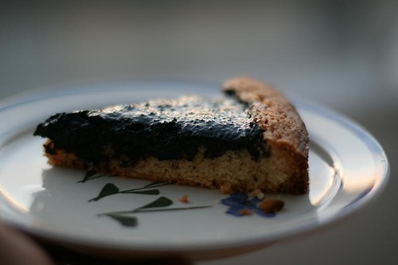
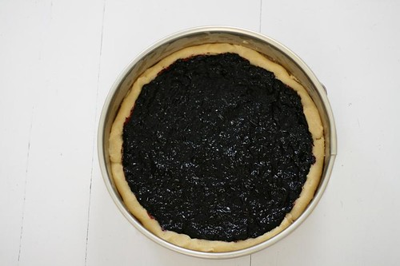
Jeg vet dette innlegget kommer litt sent, men skitt au! Dere har sikkert allerede sikret dere masse blåbær som ligger i fryseren. Heldigvis smaker ikke denne stort anderledes om du bruker frosne eller ferske bær.
Oppskriften er fra min kjære mor, som jeg vil si lager en meget god blåbærpai. Prøv selv.
Her er oppskriften…
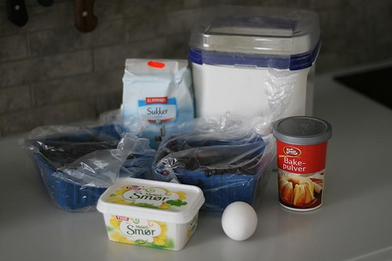
Ingrediensene: Blåbær, hvetemel, sukker, bakepulver, egg og smør. Og litt vann.
Bunnen:
125 gram smør
140 gram sukker
1 egg
2 ss vann
1,5 ts bakepulver
240 gram hvetemel
Fyllet:
800 gram ferske blåbær / eller 1 kg frosne blåbær
2 ss sukker
En skvis lime, eller litt sitronskall (valgfritt)
SETT OVNEN P�? 175 GRADER
Putt alt det følgende oppi en eltebolle…
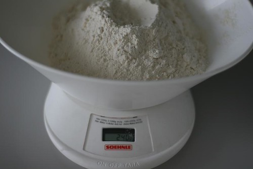
Mål opp 240 gram hvetemel
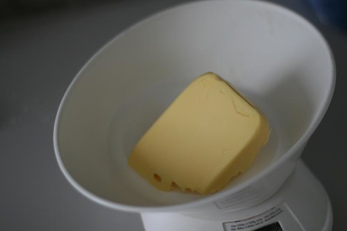
Mål opp 125 gram smør.
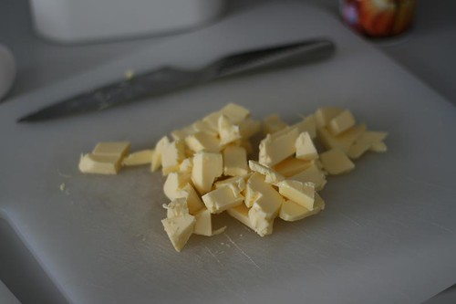
Del opp smøret i terninger.
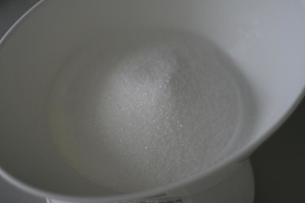
140 gram sukker
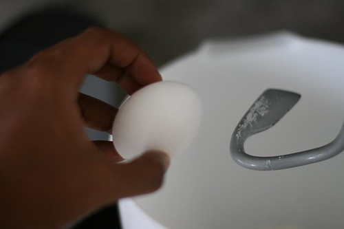
Ett egg (uten skall)
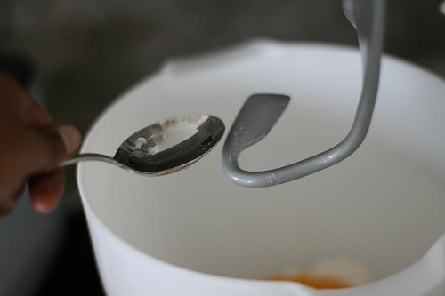
2 ss vann
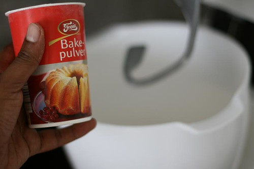
1,5 ts bakepulver
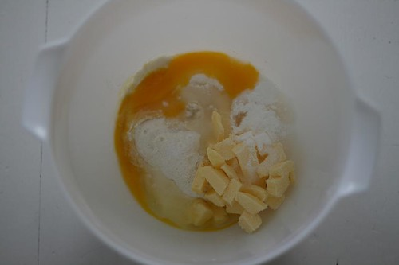
Alt oppi bollen før vi lar den magiske eltekroken til kjøkkenmaskinen fikse resten.
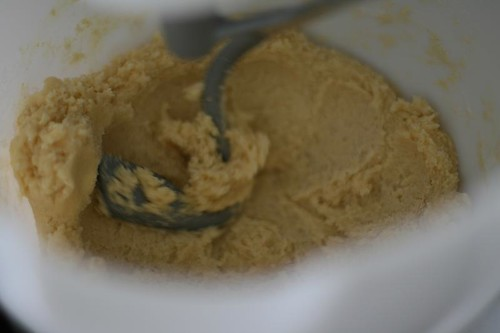
Nam. Denne deigen er faktisk ganske god. La det elte en stund 5-10 minutter. Helt til du får en jevn, litt klissete og klebrig deig.
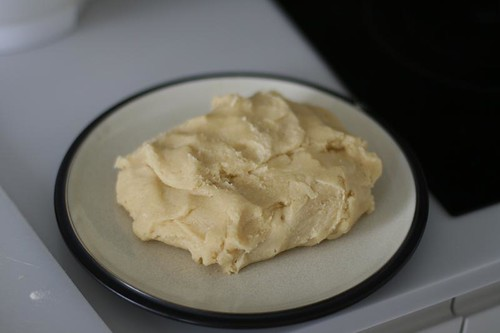
Ta ut deigen fra bollen og legg på en tallerken. Dekk til med plast og legg inn i kjøleskapet. Hvorfor? Fordi slike smørdeiger er mye enklere å behandle når de er kalde.
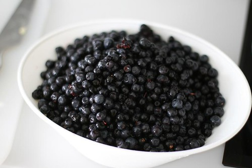
I mellomtiden, finn frem blåbærene…
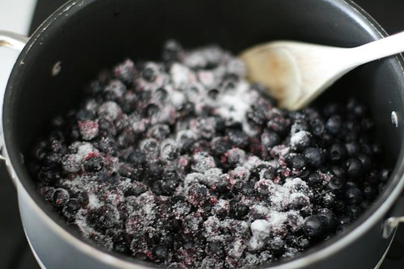
Ha blåbærene oppi en kjele sammen med 2 ss sukker, og sett temperaturen på medium. Rør konstant.
Det som skjer nå, er at væsken frigjøres fra bærene, og så må vi koke og røre helt til væsken reduseres til ca halvparten. Det du står igjen med er en tykk blåbærguffe, også kalt blåbærsyltetøy. Smak på den. Smaker den lite, så prøv deg frem med litt mer sukker. (Hvis ønskelig kan du skvise litt lime eller legge til litt sitronskall (1/2 ts). Jeg gjør ikke det.)
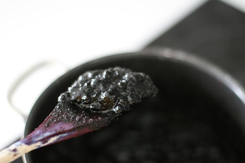
Etter omtrent 5-10 minutter vil du få en slik konsistens på blåbærsausen. Sett kjelen til side og la den avkjøle seg litt.
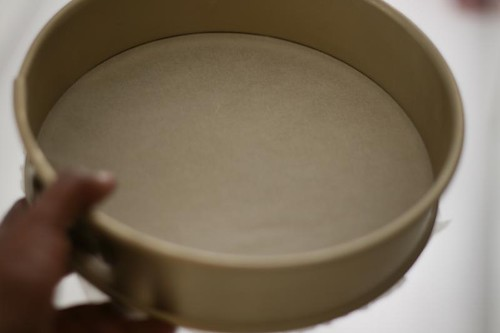
Finn frem en kakeform, eller en paiform (som jeg dessverre ikke har selv). Ikke større enn 30 cm i diameter.
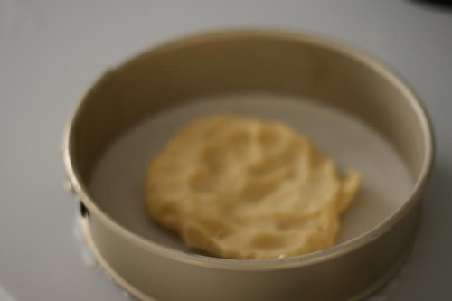
Ta deigen ut av kjøleskapet og riv av ca 1/5 som du kan bruke til kanten.
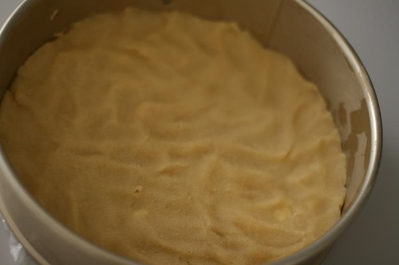
Bruk fingrene og press deigen ut slik.
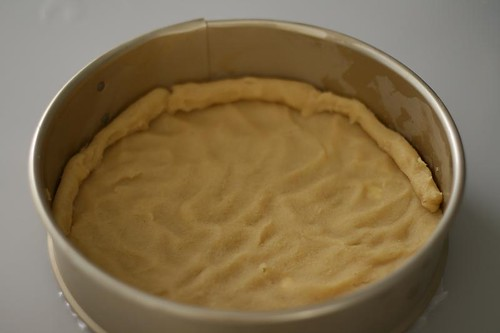
Med den resterende paideigen lager du en kant. Hvis du har paiform, trenger du ikke å gjøre dette. Du kan eventuelt legge resterende deig over fyllet i ruter. Jeg pleier ikke å gjøre det, men mamma gjør det. Smak og behag.
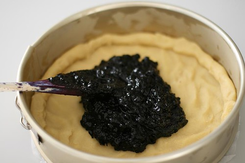
Spre blåbærfyllet ut over paideigen.
Slik! Inn i ovnen på 175 grader i ca 1 time, så må du se an. Tiden vil avhenge av ovnen din.
PAIEN ER FERDIG N�?R SKORPEN BLIR GYLLEN OG BL�?B�?RFYLLET BEGYNNER �? BOBLE!
TIPS: Oppgitt steketid er egentlig bare veiledende. Alle komfyrer er forskjellige og har forskjellig temperatur. Man bør alltid se etter kjennetegnene på om paien er ferdig, fremfor å stole på steketiden. I dette tilfellet, er paien klar når deigen blir lett gyllen. Selv om det da kun har gått 30 minutter, så er paien ferdig.
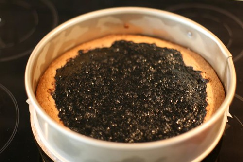
Takket være sløvhet fra min side, ble denne paien stekt ca 10 minutter for lenge. Så brun trenger ikke skorpen å være. GYLLEN, IKKE BRUN!
Etter den er ferdig, ta den ut av ovnen, og la den avkjøles i minst 1 time!!!! Vær tålmodig! Er du ekstra tålmodig, legger du den i kjøleskapet i to timer til etter at den er avkjølt.
Jeg er ikke det, så jeg spiser den lunken. Men dagen derpå er den enda bedre!
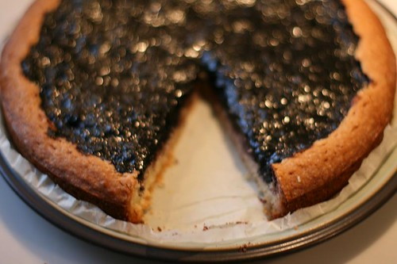
Men det betyr ingenting. DETTE BLE EN FORBANNA GOD BL�?B�?RPAI!
Server et stykke til din kjære, finn frem en god bok og et glass melk. Nyt!
Legg gjerne igjen en kommentar dersom du prøver paien, eller ikke. Jeg digger kommentarer og jeg digger at du legger deg til epostlista mi under (over 600 abonnenter !), slik at jeg kan sende deg en mail neste gang jeg legger ut en oppskrift, som er ca hver 3, måned.